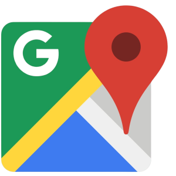
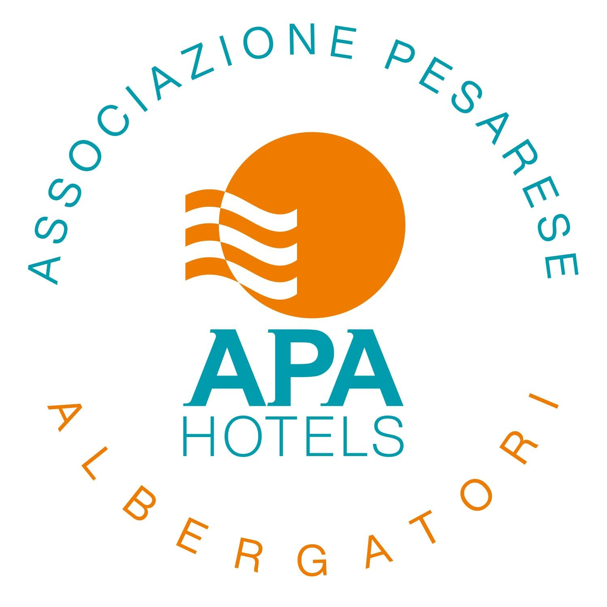

Società Canottieri Pesaro
Calata Caio Duilio 101, Pesaro

Vedi mappaAtleti · Società · Tecnici
Tutto quello che serve per organizzare la partecipazione ai Campionati Italiani Coastal Rowing 2026 di Pesaro.
Informazioni sportive
 Federazione Italiana CanottaggioBando, programma gare, iscrizioni e risultati sono pubblicati dalla Federazione Italiana Canottaggio.Bando di regata →Programma gare e risultati →
Federazione Italiana CanottaggioBando, programma gare, iscrizioni e risultati sono pubblicati dalla Federazione Italiana Canottaggio.Bando di regata →Programma gare e risultati →Sul mare
Schema indicativo dell’area di regata. La configurazione definitiva di percorso, boe e accessi al mare sarà pubblicata con la documentazione ufficiale.

A terra
La mappa mostra le principali aree operative dell’evento, gli accessi e i servizi per atleti e società. La disposizione potrà subire variazioni organizzative prima della manifestazione.

Assistenza sul campo
Società Canottieri Pesaro
Calata Caio Duilio 101, Pesaro

Vedi mappaGli orari di apertura saranno pubblicati prima dell’evento.
Modalità, luogo e orari saranno indicati nelle comunicazioni ufficiali.
Soggiornare a Pesaro
In collaborazione con APA Hotels Pesaro sono disponibili strutture convenzionate e condizioni dedicate ad atleti, tecnici e accompagnatori.

Disponibili formule B&B e pensione completa, con camere singole, doppie e multiple. Categoria e disponibilità sono soggette a conferma.
La pensione completa parte da 57 € a persona/notte in hotel 3★ Cat. A. Consulta la scheda APA per tutte le tariffe, supplementi e condizioni.
Invia il modulo compilato ad APA Hotels:
commerciale@apahotel.it
+39 335 7061510
Scarica la scheda completa con tariffe, condizioni e modulo partecipanti.
Hai esigenze particolari? Per richieste specifiche sulla sistemazione, gruppi numerosi o altre necessità, contatta direttamente APA Hotels Pesaro tramite i recapiti indicati sopra.
Raggiungere Pesaro
Il casello dista circa 7,5 km dall’area dell’evento.
La stazione ferroviaria dista circa 2,5 km.
Ancona circa 70 km · Bologna circa 160 km.
Le aree dedicate ad autovetture, furgoni e carrelli barche sono indicate nella mappa logistica →
Serve aiuto?
Il nostro staff è a disposizione per le informazioni locali relative alla partecipazione all’evento.
Per regolamenti, iscrizioni, programma gare e risultati fa riferimento la Federazione Italiana Canottaggio.